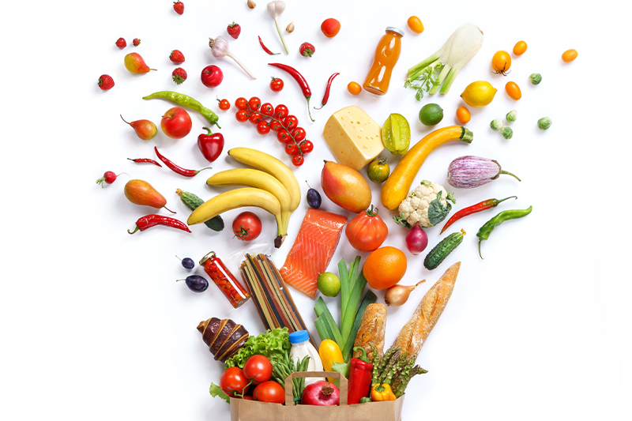

Aqui iremos te convencer que ter uma alimentação saudável não é tão difícil quanto parece, daremos dicas de alimentos ricos em nutrientes com o preço que cabe no orçamento.
Muitos acreditam que para ter uma vida saudável é preciso ter muito dinheiro (realmente o mercado está cada vez mais caro), mas aqui queremos mostrar que todos podemos e conseguimos ter uma vida saudável dentro do possível.
Começar a mudar a alimentação é um processo difícil, principalmente para aqueles que não tem o costume de comer alimentos saudáveis, mas aqui iremos te ajudar a ter uma rotina saudável.
